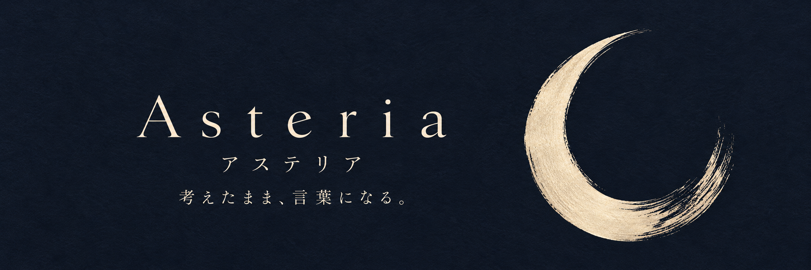
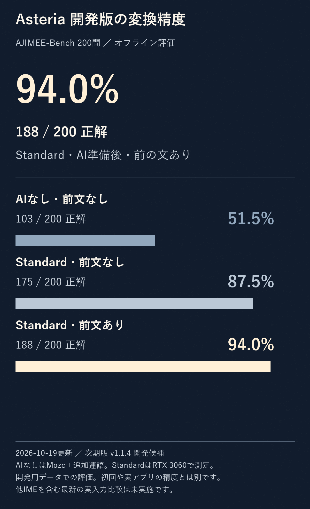
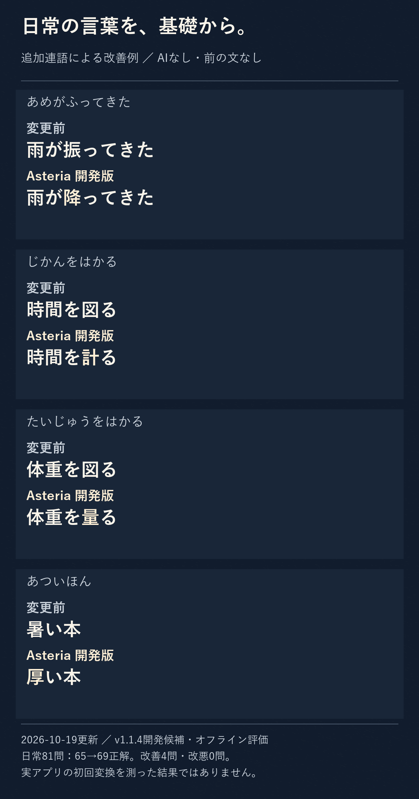
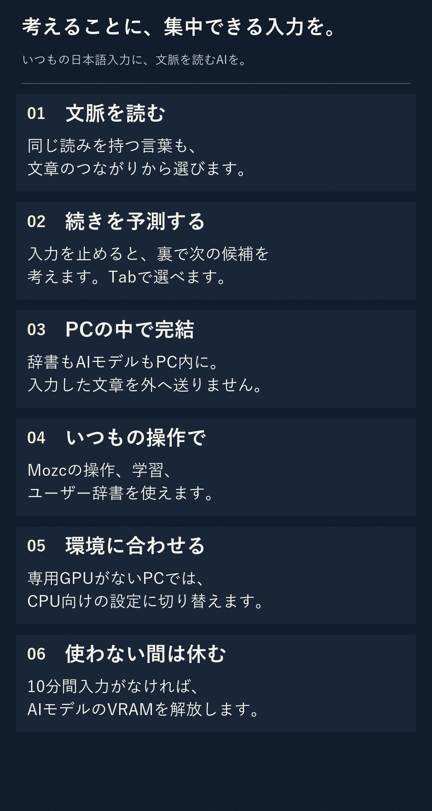
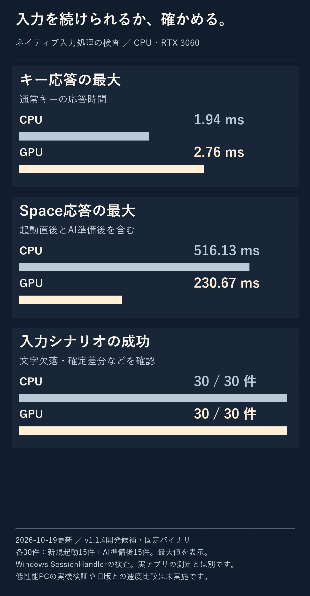
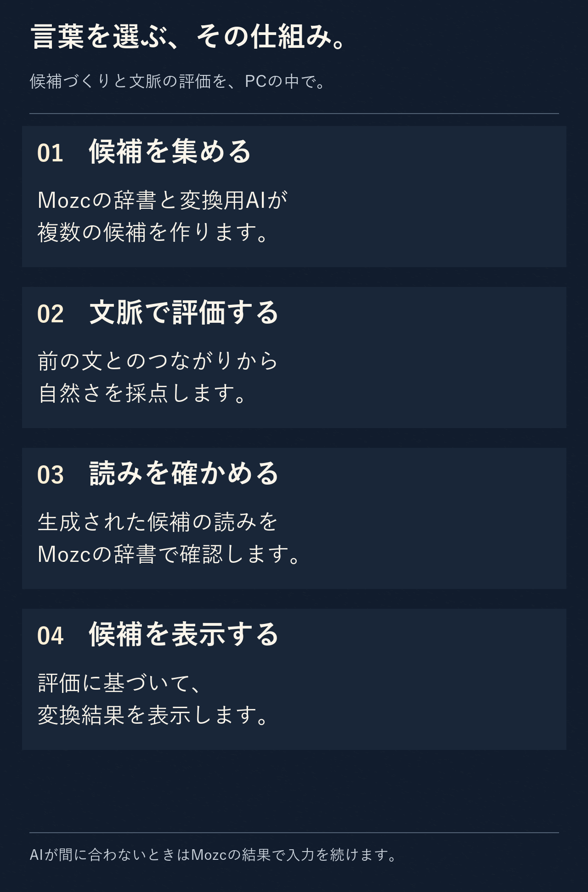
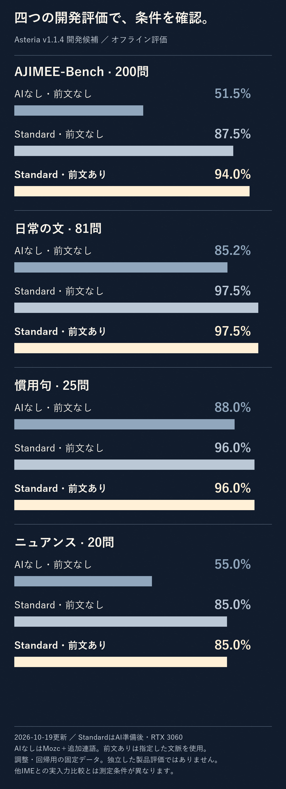
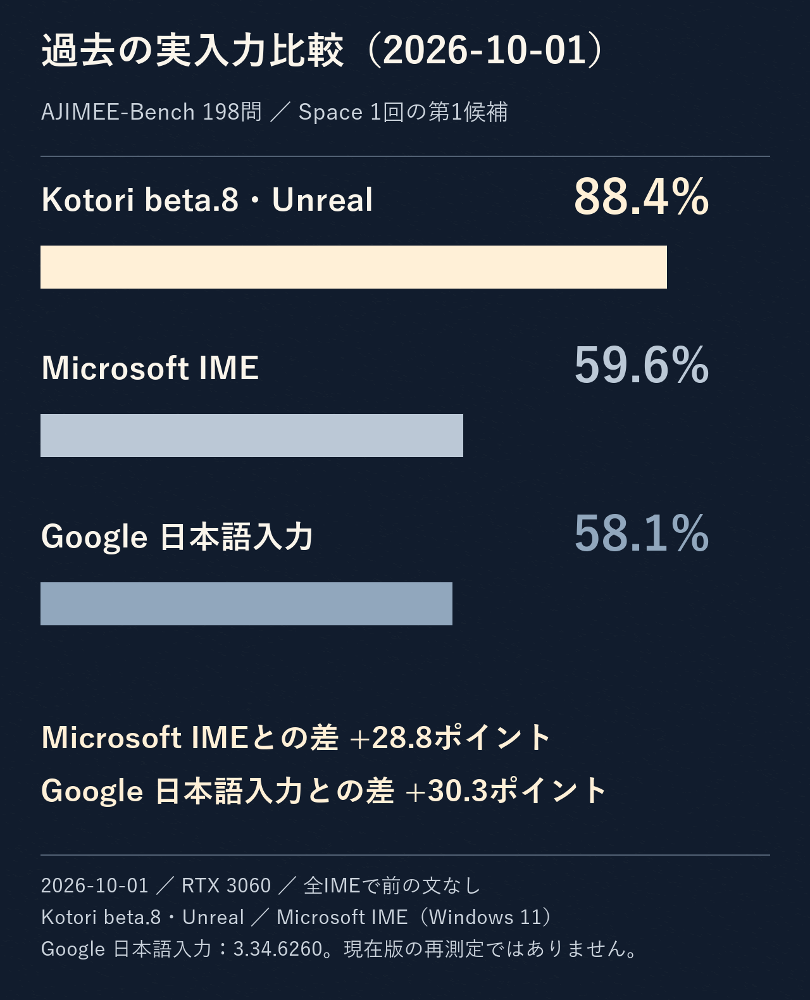

Asteria — アステリア
書くことに、集中できる日本語入力。いつもの操作に、文脈を読むAIを。
Windows向けの、完全ローカルな日本語IMEです。

月の余白濃紺と生成り。紙と墨の手触り。
製品アイコンの表示名はAsteriaです。
開発版の変換精度
2026-10-19更新。次期版v1.1.4開発候補は、AJIMEE-Bench 200問のオフライン評価で188問正解（94.0%）。Standard設定・AI準備後・前の文ありでの値です。

公開中のv1.1.3とは別の開発候補です。調整・回帰用データでの評価であり、初回や実アプリの精度ではありません。他IMEを含む最新の実入力比較は未実施です。測定条件と固定ソース
日常の言葉を、基礎から
文脈を読むAIに加え、辞書と連語も改善しています。AIなし・前文なしの日常81問で65→69問正解、改善4問・改悪0問でした。

毎日の入力に、六つの工夫

入力の流れを、大切に
通常のキー入力はMozcが処理します。開発候補のネイティブ入力処理をCPU・GPUで各30シナリオ確認し、文字欠落や確定差分などの検出不具合は0件でした。

起動直後とAI準備後を含む検査です。実アプリや低性能PCの実機測定とは別です。
言葉を選ぶ仕組み

四つの開発評価

過去の実入力比較（2026-10-01）
旧Kotori beta.8・Unrealの198問実入力比較です。旧版の88.4%を開発版の94.0%へ置き換えた比較ではありません。

当時の条件とCSV